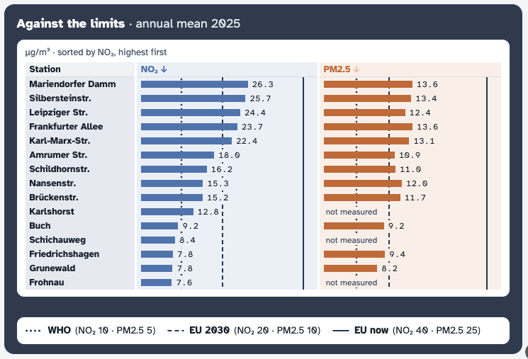
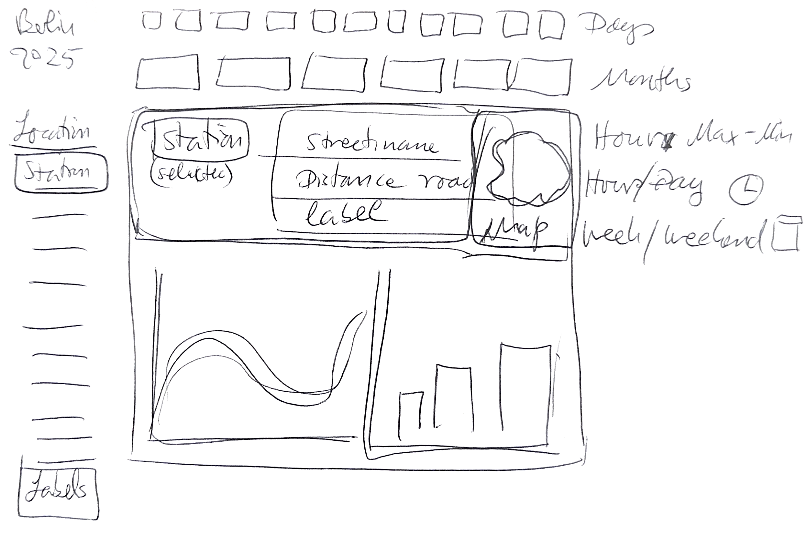
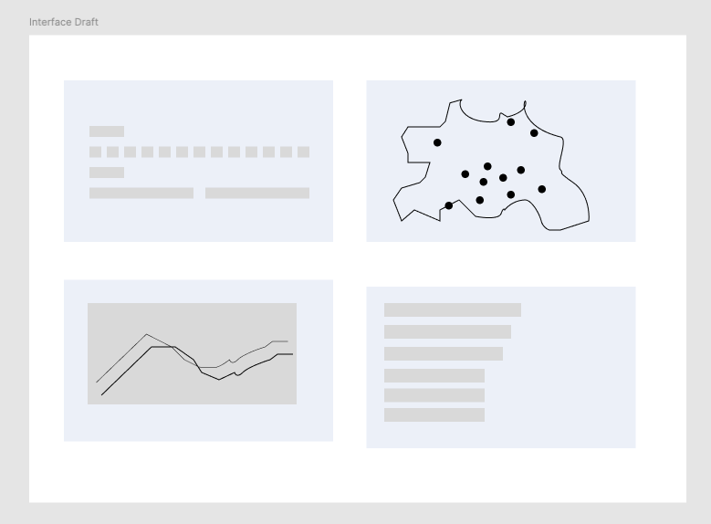
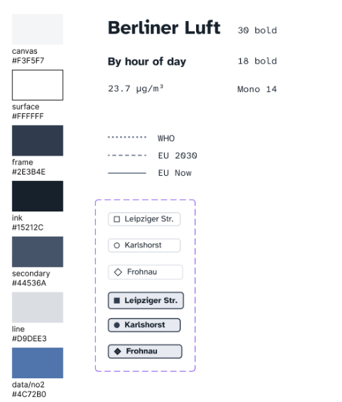
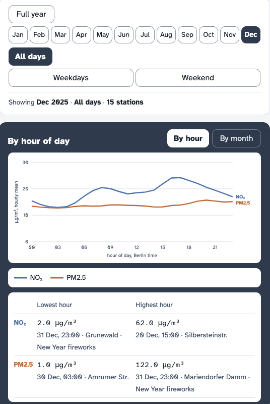

Impact
| EU limit now | EU limit 2030 | WHO guideline | |
|---|---|---|---|
| NO₂ | 0of 15 | 5of 15 | 10of 15all but the 5 suburb stations |
| PM2.5 | 0of 12 | 9of 12 | 12of 12 |
By today’s EU limit, every station is fine. By the 2030 limit and WHO, many are not. Other interfaces show only today’s verdict, although the data are public.
Annual means 2025. Short peaks can still harm health, and a station 100 m or several km away cannot show personal exposure.
The interface

Choose stations, months and days. Map, charts and station card update each other.
How it works
On weekend mornings the NO₂ rush-hour peak drops. Central traffic stations stand out from suburb and background stations.
Process
- Data exploration
- Pen sketches
- HTML draft
- Prototype
- Design system draft




Key design decisions

- Station card. One click opens a station card: type, distance, height, verdict per limit.
- Three labelled limits. Three limits instead of a grade: EU now, EU 2030, WHO. “Good” becomes relative.
- Missing data labelled. Gaps are named, not hidden: “not measured” in the table, “not published” on the card.
- Extremes with context. Extremes show date, time, station and known events like New Year fireworks.
Lessons learned
- Data skills for design
Understanding data, data analysis and data visualization helps me design information and interfaces more broadly, and integrate data work into design.
- AI in the design process
Useful for research, finding data and coding a realistic prototype from a sketch. It struggles with consistency across states: layouts jump, labels overlap, backgrounds change. It clutters with grey explanations and works best with clear instructions or examples.
- Transparency and usability
With more AI and more data everywhere, people want to verify. Balancing transparency and usability matters more than giving more answers.
- What I would test next
Compare Berliner Luft, Apple Weather and Berlin LQI with one defined user group. Ask the same questions on speed and clarity: when is air better or worse, and which limits are changing? The other two answer “good now” fast.
- Next version
One place, several sources: stations, Berlin’s model grid, Sentinel-5P NO₂ and a satellite image of green vs. built-up areas, shown as context, not as a cause. Later, ozone, weather and health context from existing models, making information accessible and usable rather than competing with data modelling.